Tourist Spot in Asia, Europe and America
Tourists Spot in Asia
1. Philippines
Coron Palawan
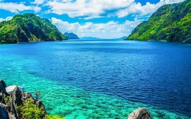
Palawan is an archipelago in the western Philippines known for its pristine landscapes. El Nido and Coron, both on Palawan Island, are famous for their breathtaking limestone cliffs, crystal-clear lagoons, and diverse marine life. Also, Coron Palawan is the perfect place for relaxation and finding peace throughout yourself.
Boracay
Boracay is a world-famous tropical island known for its powdery white sand beaches and crystal-clear waters. It's a popular destination for water sports, beach parties, and relaxation. Boracay offers variety of water adventures like Snorkeling, Scuba Diving, Parasailing, Wind Surfing and Island Hopping.
Chocolate Hills, Bohol

Bohol is an island province with a unique mix of natural wonders and cultural heritage. The Chocolate Hills, a series of perfectly cone-shaped hills, are a famous natural attraction. Chocolate Hills consists of 1,268. these hills are covered in grass that turns brown during the dry season. giving them the appearance, which is how they got their name. The exact formation process of the Chocolate Hills remains a geological mystery. while erosion are believed to have played a role, the unique uniformity of the shape and size of the hills are puzzled scientists for years. Local folklore attributes their origin to a mythical giant named Arogo who cried tears that turned into hills.
2. Japan
Kyoto, Japan
Known as the cultural heart of Japan, Kyoto is home to countless temples, shrines, and traditional tea houses. It's famous for its stunning architecture, beautiful gardens, and historic districts like Gion. Kyoto is home to the famous Arashiyama Bamboo Grove, mesmerizing bamboo forest located in the district of Arashiyama. Gion is one of kyoto's most iconic districts, known for it'a traditional wododen machiya houses and being the center of the city's geisha culture. Geishas, know locally as as geiko and maiko, can still be seen in Gion, especially in the evening when they may be on their way to traditional tea houses (ochaya) entertain guests
Tokyo, Japan
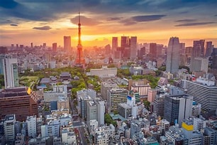
Japan's bustling capital city, Tokyo, is a vibrant metropolis with a mix of modern and traditional attractions. Visitors can explore the historic Asakusa district with the iconic Senso-ji Temple, enjoy shopping and dining in districts like Shibuya and Shinjuku, and visit cultural landmarks like the Imperial Palace and Meiji Shrine.
Hiroshima Miyajima
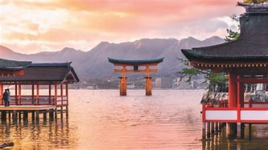
Hiroshima is known for its tragic history due to the atomic bomb attack in 1945, but it's also a city of resilience and peace. Visitors can explore the Peace Memorial Park and Museum to learn about the history and promote peace. A short ferry ride from Hiroshima takes you to Miyajima Island, famous for the Itsukushima Shrine with its iconic "floating" torii gate and beautiful landscapes.
3. China
Great Wall of China
The Great Wall is one of the most iconic and historically significant landmarks in the world. Stretching over 13,000 miles (21,196 kilometers), it offers a breathtaking view of China's landscapes. Sections such as Badaling, Mutianyu, and Jinshanling are popular among tourists for exploration.
The Forbidden City of Beijing, China
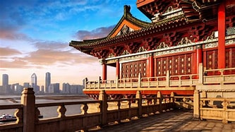
Located in the heart of Beijing, the Forbidden City is a massive imperial palace complex that served as the home of emperors for over 500 years. It's an architectural marvel with a combination of traditional Chinese design and imperial grandeur. Visitors can explore its vast courtyards, halls, and the Imperial Garden.
Terracota Army, Xi'an
The Terracotta Army is a collection of thousands of life-sized terracotta soldiers, horses, and chariots that were buried with China's first emperor, Qin Shi Huang. This UNESCO World Heritage Site is a remarkable archaeological discovery and provides a glimpse into ancient China's military might. The site includes three large pits and a museum that explains the history of the army.
Tourists Spot in Europe
1. France
Eiffel Tower, Paris
The Eiffel Tower is one of the most iconic landmarks in the world and a symbol of France. Visitors can take an elevator ride to the top for panoramic views of Paris or enjoy a meal in one of the tower's restaurants. The surrounding Champ de Mars park is a great place for a picnic or a leisurely stroll.
Palace Versailles, France
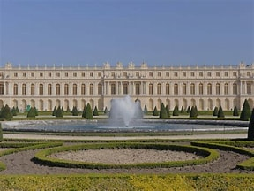
The Palace of Versailles is a UNESCO World Heritage site and a symbol of absolute monarchy in France. It features opulent architecture, beautiful gardens, and the Hall of Mirrors. Visitors can explore the palace's grand rooms and immerse themselves in the history and art of 17th-century France.
Louvre, France
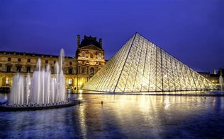
The Louvre is one of the world's largest and most famous art museums, housing an extensive collection of art and historical artifacts. It is home to the Mona Lisa, the Venus de Milo, and countless other masterpieces. The museum itself is a remarkable architectural masterpiece housed in a former royal palace.
2. Italy
Colosseum Rome
The Colosseum is an iconic symbol of ancient Rome and one of the world's most famous landmarks. This ancient amphitheater could hold up to 80,000 spectators and was used for gladiatorial contests and other public spectacles. Visitors can explore its grandeur and learn about its history at the adjacent Roman Forum and Palatine Hill.
Venice
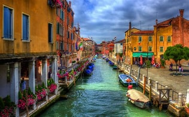
Venice is a unique and romantic city built on a network of canals. St. Mark's Square, with its stunning basilica and bell tower, is a must-visit. You can also take a gondola ride along the canals, visit the historic Rialto Bridge, and explore the charming neighborhoods of this picturesque city.
Florence, Italy
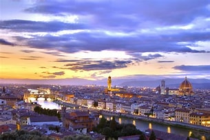
Florence, the capital of Tuscany, is known for its art and culture. The Uffizi Gallery and the Accademia Gallery house some of the world's most famous art, including Michelangelo's David. The city's historic center, a UNESCO World Heritage site, is a treasure trove of Renaissance architecture and art.
3. Germany
Bradenburg Gate, Berlin
The Brandenburg Gate is one of Berlin's most iconic landmarks. It's a neoclassical triumphal arch that once marked the entrance to the city. It's located in the heart of Berlin and has played a significant role in the city's history. The gate is particularly beautiful when illuminated at night.
Cologne Cathedral(Kolner Dom)
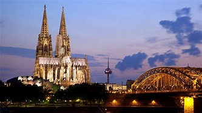
The Cologne Cathedral is one of Europe's most stunning Gothic cathedrals and a UNESCO World Heritage site. Its intricate architecture and soaring twin spires make it a remarkable sight. Visitors can explore the interior, which houses impressive stained glass windows and art, and they can also climb the tower for panoramic views of the city.
Neuschwanstein Castle, Bavaria
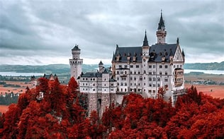
Neuschwanstein Castle is one of the most famous castles in the world and is often referred to as the "fairytale castle." It's known for its stunning architecture, perched on a hilltop with a backdrop of the Bavarian Alps. The castle inspired Disney's Cinderella Castle and is a must-visit for its picturesque setting.
Tourists Spot in America
1. United States
New York City, New York
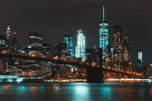
New York City is one of the world's most iconic cities and offers a wide range of attractions. Visitors can explore Times Square, Central Park, the Statue of Liberty, Broadway theaters, and the Metropolitan Museum of Art. Don't forget to take in the stunning skyline views from the Empire State Building or One World Trade Center.
Grand Canyon, Arizona
The Grand Canyon is one of the most awe-inspiring natural wonders on Earth. Located in Arizona, this massive and colorful canyon carved by the Colorado River offers breathtaking vistas. Visitors can explore the South Rim, take helicopter tours, or hike into the canyon for a closer look at its unique geological formations.
Disneyland and Disney World
These iconic theme parks, located in California and Florida, respectively, offer a magical experience for visitors of all ages. From meeting beloved Disney characters to enjoying thrilling rides and enchanting parades, these parks provide a dose of enchantment and fun.
2. Canada
Banff National Park, Alberta
Located in the Canadian Rockies, Banff National Park is a stunning natural wonderland. Visitors can explore pristine lakes like Lake Louise and Moraine Lake, hike through mountain trails, and enjoy the incredible scenery. The town of Banff itself is a charming mountain resort with shops, restaurants, and accommodations.
Niagara Falls, Ontario
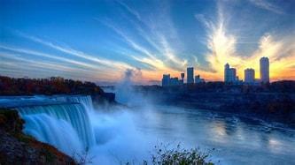
Niagara Falls is one of the most famous natural wonders in the world. The magnificent falls straddle the border between Canada and the United States. Visitors can take boat tours like the Maid of the Mist to get up close to the falls, explore the surrounding parks and attractions, and enjoy the vibrant town of Niagara Falls.
Old Quebec City, Quebec City
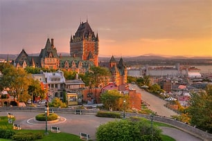
Quebec City is a historic gem and a UNESCO World Heritage site. The Old Town, with its cobblestone streets and charming architecture, feels like a piece of Europe in North America. Visitors can explore landmarks like the Citadel, Place Royale, and the iconic Château Frontenac. The city is also known for its vibrant culture and French cuisine.
3. Brazil
Rio de Janeiro
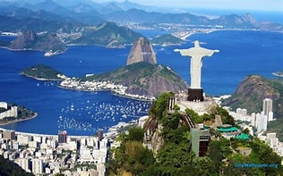
Rio de Janeiro is one of Brazil's most iconic cities, known for its stunning natural landscapes and vibrant culture. Visitors can't miss the towering Christ the Redeemer statue on Corcovado Mountain, the beautiful beaches of Copacabana and Ipanema, and the lively atmosphere of the annual Rio Carnival.
Iguazu Falls
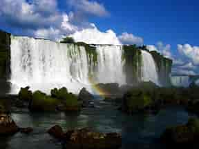
Located on the border between Brazil and Argentina, Iguazu Falls is one of the most impressive waterfall systems in the world. The cascades of water flow through lush rainforests, creating a breathtaking and immersive natural spectacle. Visitors can explore walking trails and take boat rides to get up close to the falls.
The Amazon Rainforest
Brazil is home to a significant portion of the Amazon Rainforest, the largest tropical rainforest in the world. The Amazon offers a unique and immersive experience for nature lovers and adventure seekers. Visitors can explore the jungle's diverse wildlife, take boat trips along its rivers, and learn about the indigenous cultures that call the Amazon home.